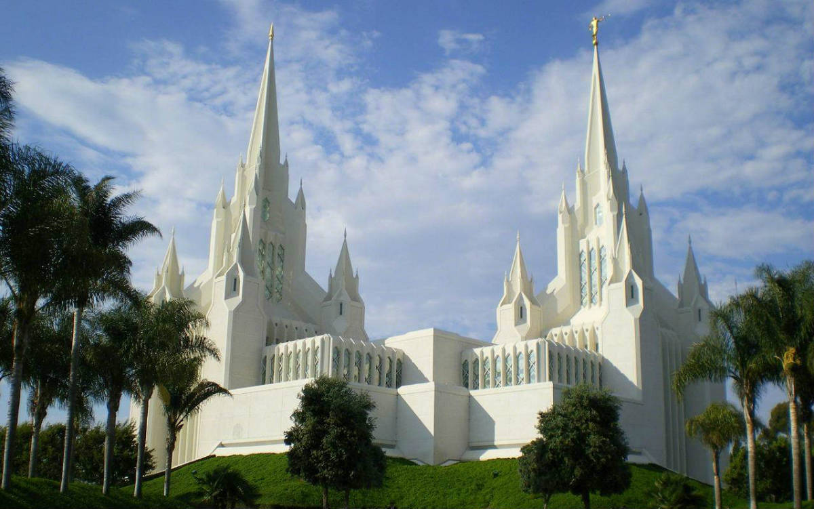

San Diego, California Temple
Dedicated: April 25, 1993
The San Diego California Temple is the 47th constructed and 45th operating temple of The Church of Jesus Christ of Latter-day Saints. Located near the La Jolla community of San Diego, it was built with two main spires, but unique to this temple are four smaller spires at the base of each main spire. The East spire is topped with the familiar Angel Moroni statue which adorns most LDS temples.

Temple Inn & Suites
4800 Montgomery Lane #300
Bethesda, MD 20814
e-mail:contact@TempleInn&Suites.com

Temple Ordinances Available Are:
- Baptisms for the Dead
- Initiatories
- Endowments
- Sealings